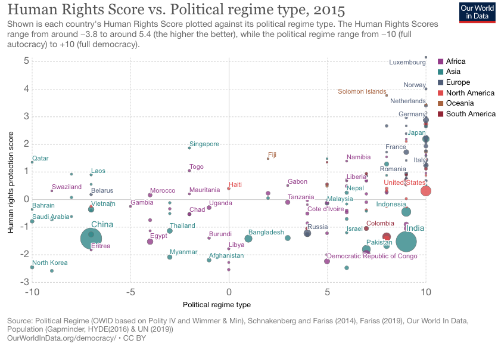

Derrière les indices de développement beaucoup de choses peuvent être regroupées. Dans ce contexte, nous nous attachons aux éléments qui permettent de voir si les citoyens ont accès aux services de bases et autres. Dans cette partie, on cherche à montrer la présence des services publics sur le territoire. Le but est de voir si le gouvernement est présent pour ses citoyens à travers differents services comme l’accès à l’eau, aux services médicaux mais aussi dans la sécurité. En effet un gouvernement est censé protéger ces citoyens, leurs assurer une sécurité physique mais aussi environnementale. 3 supports permettent d’estimer ce développement : le Social Progress Index, la base de donnée Doing Business ainsi que le Human Right Score.
Le social progress index est un indice qui donne une vision globale du “bien être” du pays indépendamment des indicateurs économiques. L’indice est construit selon 3 questions : Est ce que le pays offre pour ces citoyens la plupart des besoins de bases? Les éléments de base sont-ils en place pour que les personnes et les collectivités améliorent et maintiennent leur bien-être? Y a-t-il une possibilité pour toutes les personnes d’atteindre leur plein potentiel? De ces questions découlent 3 sous catégories (elles meme composées de sous catégories): besoins humains de base; fondements du bien être et opportunités. Le schéma ci-dessous reprends ces éléments.
La carte ci-dessous présente cet indice, en cliquant sur un pays le détails des 3 sous indices s’affiche. Ici, on voit clairement la fracture Nord/Sud. En effet les pays du sud notamment le continent africain ainsi que l’Asie du Sud présentent des indices faibles. Ces valeurs sont d’abord dû aux niveau économiques de ces pays qui sont globalement faibles mais aussi à l’instabilité des régimes politiques en vigueur comme montré en première partie.
Cet autre support montre quant à lui les pays présentant les scores les plus bas pour les indicateurs suivants : Access to improved sanitation facilites, access to piped water, homicide rate. J’ai choisi de representer en plus ces trois graphiques car chacun représente un aspect important des services “offerts” par un gouvernement. En cliquant sur un pays on peut voir si il apparait dans les autres catégories, cette possibilité permet de voir si il y a un lien entre ces 3 indicateurs. On s’aperçoit logiquement que les deux premiers peuvent avoir un rapport pour certains cas mais que la catégorie homicide rate n’est pas liée aux deux autres.
Doing business est un projet qui mesure la réglementation des affaires et son application dans 190 économies. Ces données m’ont semblé pertinente car elles permettent de mesurer le respect des règles et la possibilité de monter des affaires. Un pays dans lequel il y a de la corruption et pas de réel respect des règles possède souvent une mauvaise gouvernance de par son instabilité politique.
Le score évalue les pays selon plusieurs critères : la création d’entreprise, obtention d’un permis de construire, le raccordement à l’électricité, le transfert de propriété, l’obtention de prêts, la protection des investisseurs minoritaires, le paiement des taxes et impôts, le commerce transfrontalier, l’exécution des contrats et le règlements de l’insolvabilité. Il s’étend de 1 à 190. J’ai représenté les données sous forme de graphique qui représente les 10 pays avec les plus mauvais scores.
Pour chaque graphique on retrouve sans surprise des pays qui se positionnaient sur les memes places pour des graphiques précédents. Pour les pays présentant le score le plus haut, une majorité de pays africain sont présents. Ces données rejoignent le social progress index vu juste avant.
Pour les 10 premiers on retrouve sur les 3 premieres places des pays d’Asie et d’Océanie. Pour le reste, les pays sont principalement localisés dans l’hémisphère Nord. On retrouve la Suède et la Norvège dans les premiers, comme dans la quasi-totalité des classements proposés dans cette étude.
Le Human Right Score montre à quel degré le gouvernement en place protège et respecte les droits de l’Homme. L’indice va de -3,8 à 5,4 (le plus haut étant le mieux). Sur le graphique proposé il est associé au régime politique en vigueur. Le regime politique est classé de -10 (autocratie stricte) à 10 (démocratie complète).
Dans la partie inférieure gauche (en dessous de 0 pour les deux données) se trouve en grande majorité des pays des continents asiatique et africain. Les pays européens se trouvent quant à eux dans la partie supérieure droite. On comprend ici bien que le régime politique conditionne de manière logique le respects de ces droits. On note quand meme que des pays ayant un regime politique qui correspond à une autocratie ou à une dictature comme le cas du Swaziland se trouve dans le partie supérieure en ce qui concerne le respects des droits. Plus un pays est démocratique plus il a de chance d’avoir un score haut pour la deuxième variable et inversement.
Selon le département de science politique de l’université de Caroline du Nord, la terreur politique se définit comme “violations des droits fondamentaux de l’homme, à l’intégrité physique de la personne par les agents de l’État dans les limites territoriales de l’État en question.” Cette notion n’est pas la meme que le terrorisme. Ces violations concernent : la torture et les traitements et punitions cruelles, coups, usage excessif de la force, brutalité; viol et violence sexuelle; meurtre et usage illégal de la force mortelle; les éxécutions extrajudiciaires; les assassinats politiques; emprisonnement politique; les condamnations et détention arbitraires; la détention clandestine, les disparitions forcées, les kidnappings et les départs forcés.
Cet indice est mesuré sur une échelle de 5, il s’étend sur une année. Il est calculé a partir de 3 sources de données, ici je l’ai représenté à partir de deux : Amnesty International et Human Right Watch par soucis de mise en forme. Le graphe ci-dessous présente ces valeurs. Une selection par région peut être faite à partir du menu.
Cet indice est intéressant à analyser dans le cadre de la gouvernance car il fait appel aux notions d’état de droit qui est l’un des piliers de cette notion. Il est évident que ces comportements vont fortement influencer la relation gouvernés-gouvernants si une peur est présente sur le territoire. Comme on le voit sur la carte les pays démocratiques ne sont quasiment pas concernés par cette problématique.
created with
HTML Website Builder .